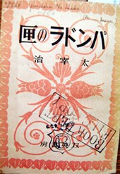
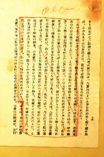
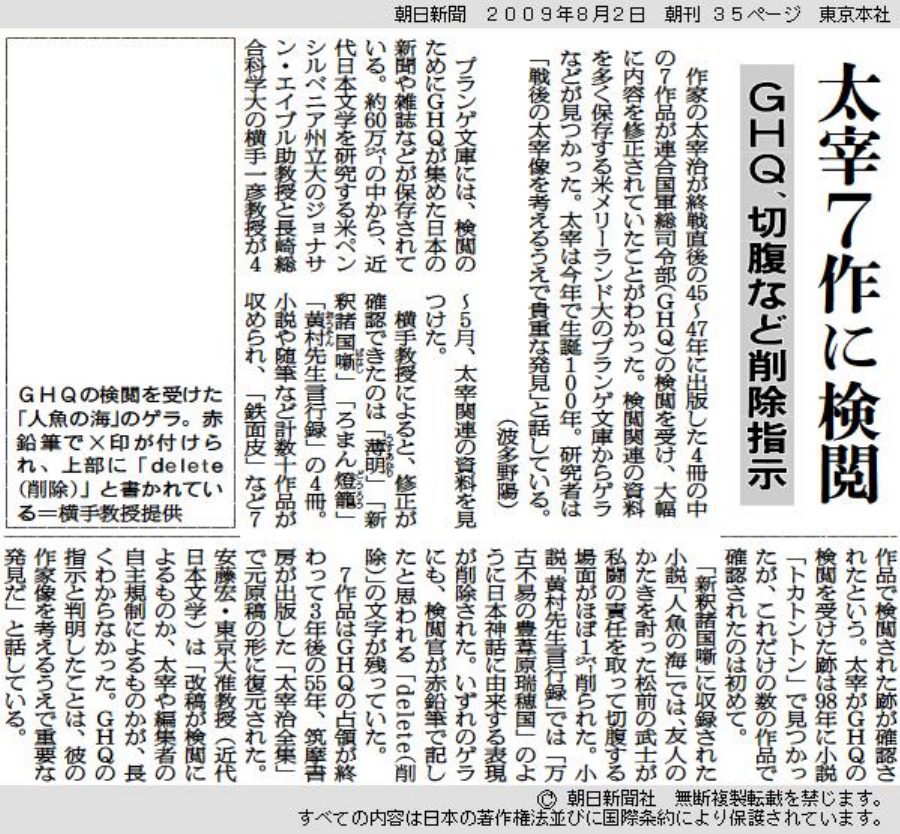

Asahi Covers Prange Discoveries
NEWS


In August 2009 I made my third trip to the Prange archive of censored materials from the Occupation of Japan. I identified about 300 fragments that had been deleted from published novels. And to my surprise the national papers in Japan were very interested!
2010
Asahi Covers Prange Discoveries
8/3/09
GHQ censored prewar values from works by Dazai
BY AKIRA HATANO
THE ASAHI SHIMBUN
NAGASAKI--Seven novels by popular writer Osamu Dazai (1909-1948) were censored by the Allied forces during their post-World War II occupation--apparently to remove references to pre-war values, Japanese and American scholars have found.
Alterations were found in manuscripts for Dazai's four books published between 1945 and 1947: "Hakumei" (Twilight), "Shinshaku Shokoku-banashi" (A new version of countries' tales), "Roman Doro" (Romantic lantern), and "Oson Sensei Genko-roku" (Sayings of Teacher Oson).
Of the dozens of novels and essays carried in the four books, evidence of censorship was confirmed in seven, the scholars said.
In a story titled "Ningyo no Umi" (A mermaid's sea) included in the book "Shinshaku Shokoku-banashi," authorities deleted most of a page describing how a samurai committed hara-kiri over a friend's death.
In "Oson Sensei Genko-roku," they cut expressions deriving from Japanese mythology.
In all of these cases, the word "delete," apparently written by a censor with a red pencil, was left on the pages.
The censored manuscripts were discovered at the University of Maryland's Gordon W. Prange Collection, which stores Japanese newspapers, magazines and other publications collected by the General Headquarters (GHQ) of the Allied Powers for censorship.
Jonathan Abel, an assistant professor at the Pennsylvania State University, and Kazuhiko Yokote, a professor at the Nagasaki Institute of Applied Science, made the discovery in April and May from among about 600,000 pages of materials, with the help of the Prange collection's curator, Eiko Sakaguchi.
Although signs of GHQ censorship had been found in another story by Dazai in 1998, this is the first time scholars have uncovered more widespread evidence of changes to his works, experts said.
The seven works were published in their original form in a collection of Dazai's works, published by Chikumashobo Ltd. in 1955. It was three years after the occupation of Japan ended and seven years after the writer killed himself.
"For a long time, it was unknown whether the alterations were made because of (GHQ) censorship or self-censorship by Dazai or his editors," said Hiroshi Ando, who teaches modern Japanese literature at the University of Tokyo.
"The discovery that the changes were made at the instruction of the GHQ is significant in the way we think about Dazai as a writer."
This year marks the 100th anniversary of the birth of Dazai, one of the most popular writers in this country.(IHT/Asahi: August 3,2009)
